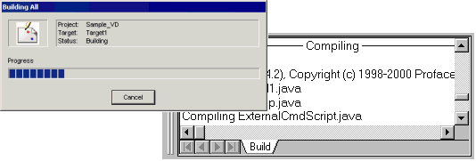
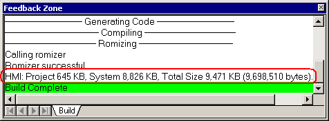
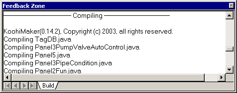

|
|
|
|
|
|
|
|
After you validate the project and fix any errors, you can build the user application that will run in Vijeo-Designer Runtime. The Build process checks the project for errors in addition to reporting any Java compile errors.
The user application must be built before it can run in simulation or run on the target machine.
In the Navigator window's Project tab, right-click the target node and click Build.
Check the progress of the build process in the Building window as well as the Feedback Zone.

If there are any errors in the project, the build fails. All errors must be resolved before you can build the project. Warnings also appear in the Feedback Zone but do not prevent you from building.
If the build is successful, download and run the user application on the target machine.

After you complete the Build, the Feedback Zone displays memory statistics for the application. Be aware these statistics are approximations, not actual calculations. Actual memory statistics can be viewed on the target at run time through the configuration menu. For more information, see Section 26.4.6, Displaying Memory.


You can build all the targets in your project in one step by right-clicking the Project node and selecting Build All.
You can output a buzzer with the build operation. From the Build menu, select Options. In the Build Options dialog box, select the Play sound on Build checkbox.
You can display detailed steps in the build process.

In the Build Options dialog box, select the Display details during Build checkbox.
If the Build operation fails, then a problem occurred while trying to generate the Java byte code. There might be unnecessary files in the build directory.
To delete unnecessary files, right-click the Target node and click Clean.
Try the build operation again.
Continue with the following steps if Build is unsuccessful.
From the Build menu, click Options to open the Build Options dialog box, then select the Display details during Build checkbox.
The next time you run build, the Feedback Zone displays details about each step in the validation and build processes. Messages stop generating when the build operation fails.
Use the final messages in the Feedback Zone as hints to locate what part of the project caused the Build to fail.
For example, if the Feedback Zone displays the compile messages below, the problem is in Panel1 because that is where the build operation stops.
-------------------------Compile----------------------------------------
KoohiMaker(0.14.2), Copyright (c) 2008 Schneider-Electric, all rights reserved
Compiling P Panel0.java
Compiling P Panel1.java
19. {gpclasses.system.CgpSystem.myMethod();}
<--------------------------------------->
*** Error: No method named "myMethod" was found in type "gpclasses/system/CgpSystem".